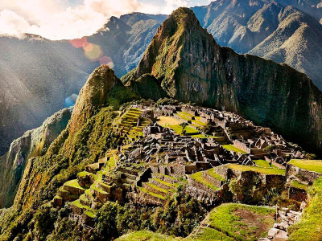

Who are we?
Not TripAdvisor is an online platform designed to help travelers—you—plan and enjoy trips by providing user-generated reviews, photos, and ratings for a wide range of locations. We feature attractions and tours, allowing you to explore options and make informed decisions based on the experiences of others. The platform also includes interactive maps, videos and imagine galleries to simplify trip planning. With the contributions of a global community, Not TripAdvisor serves as a trusted resource for discovering destinations and ensuring memorable travel experiences.
Read more about us"Not TripAdvisor has been my go-to travel tool for years. It’s like having a personal guide everywhere I go. The reviews are detailed, and the photos from users make it so much easier to decide. I’ve discovered so many hidden gems thanks to this platform."
- Anonymous ⭐⭐⭐⭐⭐
Destinations
Browse through our most highly-rated destinations below. See more
Mount Fuji

Mount Fuji, Japan's iconic peak, stands as a breathtaking symbol of natural beauty and cultural significance. Rising 3,776 meters above sea level, this dormant volcano offers spectacular views, especially at sunrise. Whether you’re hiking...
Take me thereGreat Wall of China

The Great Wall of China is a monumental feat of ancient engineering, stretching over 13,000 miles through rugged landscapes. This iconic structure, built over several dynasties, offers visitors a chance to step back in time and marvel at its immense...
Take me thereTaj Mahal
The Taj Mahal, a UNESCO World Heritage site, is one of the most stunning monuments in the world, renowned for its breathtaking beauty and timeless elegance. Located in Agra, India, this marble mausoleum was built by...
Take me thereReviews
See what people like you are saying about our top-rated destinations
A little hectic! ⭐️⭐️⭐️⭐️

"The statue of Christ the Redeemer is magnificent, but the journey to get there can be hectic. The views from Corcovado are unmatched, and the statue itself is an awe-inspiring piece of art and engineering. However, I visited in the afternoon, and it was very crowded, making it hard to fully enjoy the experience. The tram ride up the mountain was scenic but required patience due to long lines. Despite these challenges, the visit was well worth it for the panoramic views and the chance to see this iconic landmark up close."
- Anonymous; Christ the Redeemer
A stunning challenge ⭐️⭐️⭐️⭐️

"The views and history of Machu Picchu are stunning, but the experience can be a bit challenging. I visited during the peak season, and while the site itself is incredible, the crowds made some areas feel congested. The steep paths can be tough to navigate, so wear sturdy shoes and be prepared for a workout. The surrounding landscape is spectacular, especially from the Sun Gate, so it’s worth the extra hike. Despite the crowds, it’s a fascinating glimpse into the Inca civilization and a must-see for history and nature lovers alike."
- Anonymous; Machu Picchu